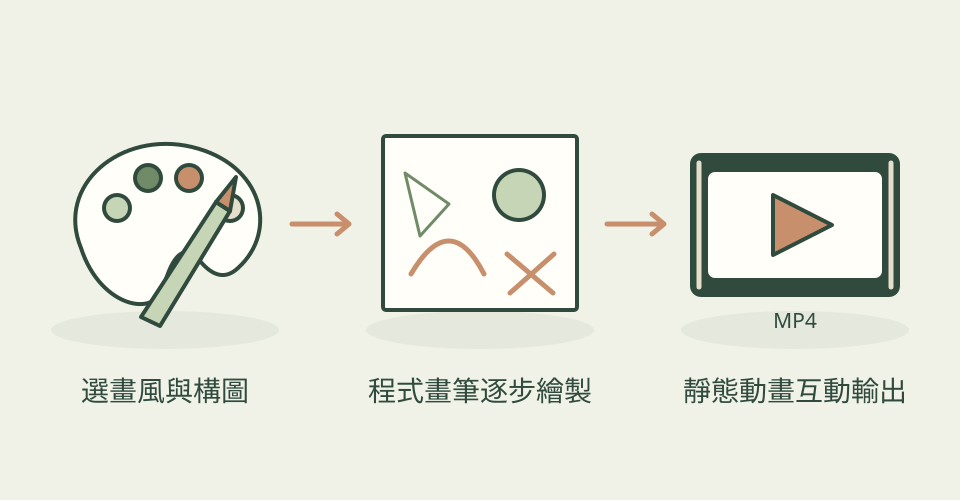

想替品牌網站畫一組水彩風配圖，再讓主視覺像現場作畫一樣逐筆出現？anidoodle 讓 AI 助手用程式安排線條、色塊、紙面與時間，不必每次重新呼叫生圖模型。作者提供 32 種畫風與對應範例，包括色鉛筆、水墨、木版、像素與剪紙；它是一套需要助手編寫、渲染和修稿的製作工具與指南。
它怎麼幫忙
先說清楚主題、畫風、尺寸、時長與是否有聲音，選一張最重要的畫面確認外觀。程式以固定種子和影格安排每一筆，靜態圖與落筆短片可以共用來源；動畫要檢查循環接縫、文字可讀時間與最後輸出的影格。網頁路線可讓角色跟隨游標、回應表單，例如輸入密碼時遮住眼睛。工具附機械檢查與看圖修稿流程，但數值通過不等於畫得好看。
三步驟看懂這個技能

由同一份繪圖來源安排筆觸與時間；本站功能示意，非作者成果或技能實測。
功能示意・本站繪製 放大查看可以這樣開口
這是一個可依需求修改的委託範例。
替獨立書店畫三張同風格水彩配圖：貓窩在閱讀椅、書堆旁的盆栽、雨天窗邊。先確認貓與椅子的構圖，交透明 PNG；再把其中一張做成 8 秒落筆動畫，鉛筆線先出現、淡色水洗慢慢鋪開，最後停在完整插畫。這是本站需求範例，非實測成果。
適合什麼工作
適合做品牌系列配圖、網站主視覺、教學解說與社群短片的人，尤其是願意讓 AI 修改程式並反覆看預覽的設計師或前端開發者。純手繪工作者可把作者圖庫當作可選方向，不必把程式畫筆視為取代原稿的保證。
開始之前
- 準備工具
- 需要能讀技能、寫檔、執行 Node 與查看畫面的 AI 助手。作者列 Node 20+、Playwright Chromium；靜態圖需要瀏覽器，動畫另需 FFmpeg。3D 路線採 Three.js，並非直接交付 Blender 建模流程。工具準備與輸出時間依本機而異。
- 使用成本
- 程式與本次採用的作者範例按 Apache-2.0 保存授權。程式繪圖路線不強制付費生圖 API，仍有 AI 助手額度、硬體與渲染時間成本。可選原聲樂器包約 373 MB，須另確認下載；配音或外部音樂供應商可能另需帳號與費用，不能把所有聲音路線當免費。
- 交付內容
- 靜態 PNG、GIF／MP4／WebM／APNG、可重繪的程式來源，亦可輸出離線 HTML 播放頁；產品短片路線另附字幕與多比例版面。實際透明支援與音訊依輸出格式而定。
- 先留意
- 2026-11-14 首次收錄，非今日發布；儲存庫建立於 9 月 22 日，本次觀察 1,665 星。作者宣稱可重現的影像與聲音，本站未執行候選或跨機測試，不保證任意作品品質或完全相同位元組。原作圖僅展示隨附畫風，不能驗證所有影片、配音與互動能力。
作者與來源
本文依作者公開說明整理，沒有實際執行這個專案。功能插圖由本站繪製，原作者範例另行標示；並非本站執行技能的測試結果。GitHub 星數為專案總量，觀察時間為 2026年11月14日 08:34（台北時間）。
首次收錄，尚無前次收藏量比較。